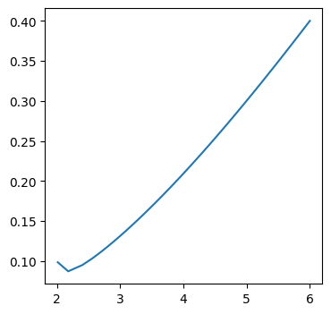
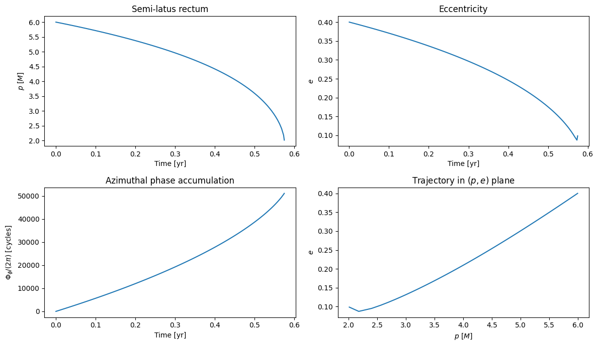
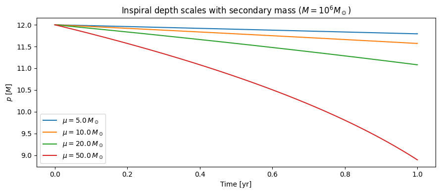
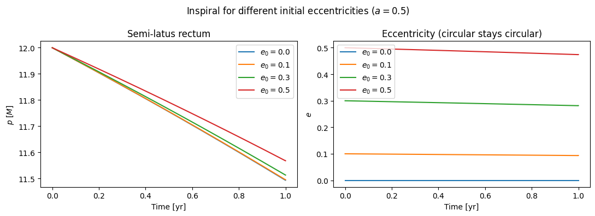
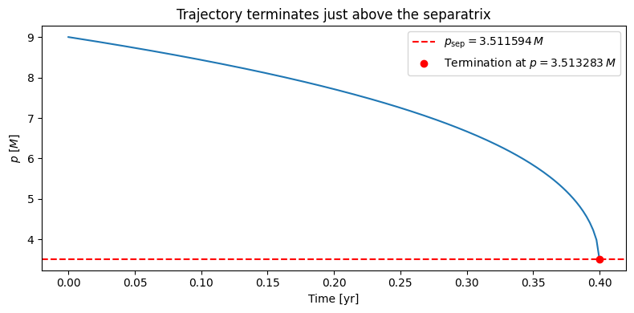
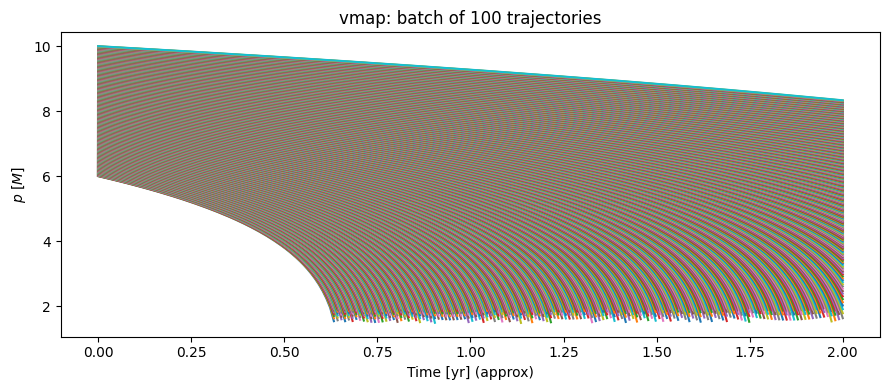

02 — EMRI Trajectory Integration
This notebook covers fewtrax.trajectory.inspiral — the adiabatic EMRI inspiral ODE.
Topics:
The adiabatic inspiral ODE and the \(\mu/M\) mass-ratio scaling
Converting radiation-reaction forces \((\dot{E}, \dot{L})\) to \((\dot{p}, \dot{e})\) via the geodesic Jacobian
diffrax
Tsit5adaptive solver with separatrix event terminationJIT compilation and
@eqx.filter_jitVisualising \(p(t)\), \(e(t)\), and the orbital phases \(\Phi_\phi(t)\)
Background: The Adiabatic Approximation
In the adiabatic approximation the mass ratio \(\eta = \mu/M \ll 1\) allows a separation of timescales:
Fast: orbital motion (Boyer–Lindquist period \(T_{\rm orb} \sim M\))
Slow: radiation-reaction (inspiral timescale \(T_{\rm insp} \sim M/\eta \sim 10^5\,{\rm yr}\) for a typical EMRI)
On the slow timescale, the orbital parameters \((p, e)\) evolve according to
driven by the orbit-averaged energy and angular-momentum fluxes \(\langle\dot{E}\rangle\), \(\langle\dot{L}\rangle\). The orbital phases advance at the instantaneous geodesic frequencies:
Time here is Boyer–Lindquist coordinate time in units of \(M\).
Converting \((\dot{E}, \dot{L})\) to \((\dot{p}, \dot{e})\)
The FEW flux tables provide \((\dot{E}, \dot{L})\) normalised to the Peters (1964) PN expressions. To get \((\dot{p}, \dot{e})\) we invert the \(2 \times 2\) Jacobian
\(J\) is computed automatically via jax.jacfwd.
Note: At \(e = 0\) both \(\partial E/\partial e = \partial L/\partial e = 0\) (circular orbit symmetry), making \(J\) singular. fewtrax handles this by using the circular-orbit fallback \(\dot{p} = \dot{E}/(\partial E/\partial p)\), \(\dot{e} = 0\).
[28]:
import os
import numpy as np
import matplotlib.pyplot as plt
import jax
import jax.numpy as jnp
jax.config.update("jax_enable_x64", True)
from dotenv import load_dotenv
load_dotenv()
DATA_DIR = os.getenv("FEW_DATA_DIR")
print(f"FEW_DATA_DIR = {DATA_DIR}")
from fewtrax.data import load_flux_data
from fewtrax.trajectory import run_inspiral, EMRIInspiral
from fewtrax.trajectory.inspiral import SEPARATRIX_BUFFER
print("Loading flux data…")
flux_data = load_flux_data(DATA_DIR)
print("Done.")
FEW_DATA_DIR = /Users/bertd/Documents/PhD/LISA/Codes/FastEMRIWaveforms/src/few/data
Loading flux data…
Done.
2.1 Running a Single Inspiral
run_inspiral is a convenience wrapper around EMRIInspiral. It returns six JAX arrays:
Array |
Units |
Description |
|---|---|---|
|
seconds |
Observer time |
|
\(M\) |
Semi-latus rectum |
|
— |
Eccentricity |
|
rad |
Azimuthal phase |
|
rad |
Polar phase |
|
rad |
Radial phase |
[14]:
t, p, e, Phi_phi, Phi_theta, Phi_r = run_inspiral(
a = 0.95, # BH spin
p0 = 6.0, # initial semi-latus rectum [M]
e0 = 0.4, # initial eccentricity
T = 1.0, # observation time [years]
flux_data = flux_data,
M = 1e6, # primary mass [M_sun]
mu = 10.0, # secondary mass [M_sun]
dense_steps = 200, # number of saved trajectory points
)
valid = ~np.isinf(np.asarray(p))
print(f"Trajectory points computed: {valid.sum()} / {len(p)}")
print(f"p: {float(p[0]):.4f} -> {float(p[valid][-1]):.4f} [M]")
print(f"e: {float(e[0]):.4f} -> {float(e[valid][-1]):.4f}")
print(f"Total azimuthal phase: {float(Phi_phi[valid][-1])/(2*np.pi):.1f} radians")
Trajectory points computed: 116 / 201
p: 6.0000 -> 2.0109 [M]
e: 0.4000 -> 0.0987
Total azimuthal phase: 51147.0 radians
[15]:
valid.sum()
[15]:
np.int64(116)
[16]:
p[valid]
[16]:
Array([6. , 5.98652336, 5.97295278, 5.95928686, 5.94552419,
5.93166331, 5.91770273, 5.90364092, 5.88947633, 5.87520734,
5.86083232, 5.84634958, 5.8317574 , 5.817054 , 5.80223757,
5.78730624, 5.77225809, 5.75709117, 5.74180346, 5.72639288,
5.7108573 , 5.69519453, 5.67940233, 5.66347836, 5.64742027,
5.63122558, 5.61489179, 5.59841628, 5.5817964 , 5.56502938,
5.54811238, 5.53104247, 5.51381663, 5.49643175, 5.47888461,
5.46117188, 5.44329014, 5.42523584, 5.40700531, 5.38859478,
5.37000032, 5.35121787, 5.33224323, 5.31307204, 5.29369981,
5.27412184, 5.25433329, 5.23432912, 5.21410411, 5.19365281,
5.17296958, 5.15204854, 5.13088358, 5.10946831, 5.08779612,
5.06586007, 5.04365295, 5.02116721, 4.99839498, 4.97532801,
4.9519577 , 4.92827501, 4.90427047, 4.87993418, 4.8552557 ,
4.83022411, 4.80482788, 4.7790549 , 4.7528924 , 4.72632691,
4.69934421, 4.67192926, 4.64406616, 4.61573803, 4.586927 ,
4.55761403, 4.5277789 , 4.49740008, 4.46645455, 4.43491775,
4.40276336, 4.36996314, 4.33648676, 4.30230157, 4.26737233,
4.23166094, 4.19512606, 4.1577228 , 4.11940225, 4.08011096,
4.0397903 , 3.99837582, 3.95579637, 3.91197312, 3.86681831,
3.82023386, 3.77210955, 3.72232088, 3.67072626, 3.61716369,
3.56144629, 3.50335657, 3.44263907, 3.37899009, 3.3120439 ,
3.24135296, 3.16635924, 3.08635044, 3.00039035, 2.9072003 ,
2.80494104, 2.69076238, 2.55970498, 2.40115491, 2.17678099,
2.01091325], dtype=float64)
[18]:
print(f't = {t[valid]}')
print(f'p = {p[valid]}')
print(f'e = {e[valid]}')
t = [ 0. 158583.6671535 317167.33430699 475751.00146049
634334.66861398 792918.33576748 951502.00292097 1110085.67007447
1268669.33722796 1427253.00438146 1585836.67153495 1744420.33868845
1903004.00584195 2061587.67299544 2220171.34014894 2378755.00730243
2537338.67445593 2695922.34160942 2854506.00876292 3013089.67591641
3171673.34306991 3330257.0102234 3488840.6773769 3647424.3445304
3806008.01168389 3964591.67883739 4123175.34599088 4281759.01314438
4440342.68029787 4598926.34745137 4757510.01460486 4916093.68175836
5074677.34891186 5233261.01606535 5391844.68321885 5550428.35037234
5709012.01752584 5867595.68467933 6026179.35183283 6184763.01898632
6343346.68613982 6501930.35329331 6660514.02044681 6819097.68760031
6977681.3547538 7136265.0219073 7294848.68906079 7453432.35621429
7612016.02336778 7770599.69052128 7929183.35767477 8087767.02482827
8246350.69198176 8404934.35913526 8563518.02628876 8722101.69344225
8880685.36059575 9039269.02774924 9197852.69490274 9356436.36205623
9515020.02920973 9673603.69636322 9832187.36351672 9990771.03067021
10149354.69782371 10307938.36497721 10466522.0321307 10625105.6992842
10783689.36643769 10942273.03359119 11100856.70074468 11259440.36789818
11418024.03505167 11576607.70220517 11735191.36935866 11893775.03651216
12052358.70366566 12210942.37081915 12369526.03797265 12528109.70512614
12686693.37227964 12845277.03943313 13003860.70658663 13162444.37374012
13321028.04089362 13479611.70804711 13638195.37520061 13796779.04235411
13955362.7095076 14113946.3766611 14272530.04381459 14431113.71096809
14589697.37812158 14748281.04527508 14906864.71242857 15065448.37958207
15224032.04673556 15382615.71388906 15541199.38104255 15699783.04819605
15858366.71534955 16016950.38250304 16175534.04965654 16334117.71681003
16492701.38396353 16651285.05111702 16809868.71827052 16968452.38542401
17127036.05257751 17285619.71973101 17444203.3868845 17602787.054038
17761370.72119149 17919954.38834499 18078538.05549848 18132221.32649739]
p = [6. 5.98652336 5.97295278 5.95928686 5.94552419 5.93166331
5.91770273 5.90364092 5.88947633 5.87520734 5.86083232 5.84634958
5.8317574 5.817054 5.80223757 5.78730624 5.77225809 5.75709117
5.74180346 5.72639288 5.7108573 5.69519453 5.67940233 5.66347836
5.64742027 5.63122558 5.61489179 5.59841628 5.5817964 5.56502938
5.54811238 5.53104247 5.51381663 5.49643175 5.47888461 5.46117188
5.44329014 5.42523584 5.40700531 5.38859478 5.37000032 5.35121787
5.33224323 5.31307204 5.29369981 5.27412184 5.25433329 5.23432912
5.21410411 5.19365281 5.17296958 5.15204854 5.13088358 5.10946831
5.08779612 5.06586007 5.04365295 5.02116721 4.99839498 4.97532801
4.9519577 4.92827501 4.90427047 4.87993418 4.8552557 4.83022411
4.80482788 4.7790549 4.7528924 4.72632691 4.69934421 4.67192926
4.64406616 4.61573803 4.586927 4.55761403 4.5277789 4.49740008
4.46645455 4.43491775 4.40276336 4.36996314 4.33648676 4.30230157
4.26737233 4.23166094 4.19512606 4.1577228 4.11940225 4.08011096
4.0397903 3.99837582 3.95579637 3.91197312 3.86681831 3.82023386
3.77210955 3.72232088 3.67072626 3.61716369 3.56144629 3.50335657
3.44263907 3.37899009 3.3120439 3.24135296 3.16635924 3.08635044
3.00039035 2.9072003 2.80494104 2.69076238 2.55970498 2.40115491
2.17678099 2.01091325]
e = [0.4 0.39861243 0.39721621 0.39581125 0.39439742 0.3929746
0.39154268 0.39010152 0.38865101 0.38719101 0.38572138 0.38424201
0.38275274 0.38125343 0.37974395 0.37822413 0.37669383 0.37515289
0.37360115 0.37203846 0.37046463 0.3688795 0.36728289 0.36567462
0.3640545 0.36242234 0.36077796 0.35912113 0.35745167 0.35576935
0.35407396 0.35236527 0.35064306 0.34890708 0.34715709 0.34539283
0.34361406 0.34182049 0.34001186 0.33818788 0.33634826 0.3344927
0.33262088 0.33073248 0.32882718 0.32690462 0.32496444 0.32300629
0.32102978 0.31903452 0.3170201 0.31498609 0.31293206 0.31085755
0.30876208 0.30664518 0.30450632 0.30234498 0.3001606 0.29795261
0.29572041 0.29346337 0.29118085 0.28887216 0.2865366 0.28417341
0.28178182 0.27936102 0.27691014 0.2744283 0.27191455 0.2693679
0.26678731 0.26417167 0.26151984 0.25883058 0.25610261 0.25333455
0.25052494 0.24767226 0.24477486 0.24183099 0.2388388 0.23579629
0.23270134 0.22955166 0.2263448 0.22307812 0.21974877 0.21635365
0.21288944 0.20935247 0.20573878 0.20204401 0.19826339 0.19439164
0.19042291 0.18635071 0.18216778 0.17786595 0.17343597 0.16886732
0.16414794 0.15926384 0.15419869 0.1489332 0.14344424 0.13770375
0.13167704 0.12532039 0.11857773 0.11137631 0.10362607 0.09526926
0.08740661 0.09873156]
[19]:
fig, ax = plt.subplots(1,1, figsize=(4,4))
ax.plot(p[valid], e[valid], label='Orbital trajectory')
[19]:
[<matplotlib.lines.Line2D at 0x10753f110>]

[20]:
t_yr = np.asarray(t)[valid] / (365.25 * 24 * 3600)
p_np = np.asarray(p)[valid]
e_np = np.asarray(e)[valid]
Pphi = np.asarray(Phi_phi)[valid] / (2 * np.pi) # in cycles
Pr = np.asarray(Phi_r)[valid] / (2 * np.pi)
fig, axes = plt.subplots(2, 2, figsize=(12, 7))
axes[0,0].plot(t_yr, p_np)
axes[0,0].set_xlabel("Time [yr]")
axes[0,0].set_ylabel("$p$ [$M$]")
axes[0,0].set_title("Semi-latus rectum")
axes[0,1].plot(t_yr, e_np)
axes[0,1].set_xlabel("Time [yr]")
axes[0,1].set_ylabel("$e$")
axes[0,1].set_title("Eccentricity")
axes[1,0].plot(t_yr, Pphi)
axes[1,0].set_xlabel("Time [yr]")
axes[1,0].set_ylabel("$\\Phi_\\phi / (2\\pi)$ [cycles]")
axes[1,0].set_title("Azimuthal phase accumulation")
axes[1,1].plot(p_np, e_np)
axes[1,1].set_xlabel("$p$ [$M$]")
axes[1,1].set_ylabel("$e$")
axes[1,1].set_title("Trajectory in $(p, e)$ plane")
# plt.suptitle(f"EMRI inspiral: $a=0.7$, $M=10^6\\,M_\\odot$, $\\mu=10\\,M_\\odot$, $T=1\\,{\\rm yr}$")
plt.tight_layout()
plt.show()

2.2 The μ/M Mass-Ratio Scaling
The FEW flux tables are normalised to \(\mu = M = 1\) (geometric units). To convert to physical units:
For a typical EMRI: \(\mu/M = 10/10^6 = 10^{-5}\), so the inspiral rate is 100,000 times slower than the flux-table value. The orbital phases \(\Phi_\phi\), \(\Phi_r\) are not scaled by \(\mu/M\) — they accumulate at the geodesic frequencies regardless of mass ratio.
Let’s check how the inspiral depth scales with the mass ratio:
[21]:
fig, ax = plt.subplots(figsize=(9, 4))
for mu_val, color in zip([5.0, 10.0, 20.0, 50.0], ["C0", "C1", "C2", "C3"]):
t_, p_, *_ = run_inspiral(
a=0.7, p0=12.0, e0=0.4, T=1.0,
flux_data=flux_data, M=1e6, mu=mu_val, dense_steps=150,
)
valid_ = ~np.isnan(np.asarray(p_))
t_yr_ = np.asarray(t_)[valid_] / (365.25 * 24 * 3600)
ax.plot(t_yr_, np.asarray(p_)[valid_], color=color, label=f"$\\mu = {mu_val}\\,M_\\odot$")
ax.set_xlabel("Time [yr]")
ax.set_ylabel("$p$ [$M$]")
ax.set_title("Inspiral depth scales with secondary mass ($M = 10^6 M_\\odot$)")
ax.legend()
plt.tight_layout()
plt.show()

2.3 Circular Orbit (e = 0)
Circular orbits are a special case. For \(e = 0\) the Jacobian \(J\) is singular (both \(\partial E/\partial e\) and \(\partial L/\partial e\) vanish at \(e = 0\) by symmetry). The ocde detects this and uses a fallback formula for circular orbits:
Circular orbits evolve along the circular-orbit sequence and stay circular throughout.
[22]:
fig, axes = plt.subplots(1, 2, figsize=(11, 4))
for e0_val, color in zip([0.0, 0.1, 0.3, 0.5], ["C0", "C1", "C2", "C3"]):
t_, p_, e_, *_ = run_inspiral(
a=0.5, p0=12.0, e0=e0_val, T=1.0,
flux_data=flux_data, M=1e6, mu=10.0, dense_steps=150,
)
valid_ = ~np.isnan(np.asarray(p_))
t_yr_ = np.asarray(t_)[valid_] / (365.25 * 24 * 3600)
axes[0].plot(t_yr_, np.asarray(p_)[valid_], color=color, label=f"$e_0={e0_val}$")
axes[1].plot(t_yr_, np.asarray(e_)[valid_], color=color, label=f"$e_0={e0_val}$")
axes[0].set_xlabel("Time [yr]")
axes[0].set_ylabel("$p$ [$M$]")
axes[0].set_title("Semi-latus rectum")
axes[0].legend()
axes[1].set_xlabel("Time [yr]")
axes[1].set_ylabel("$e$")
axes[1].set_title("Eccentricity (circular stays circular)")
axes[1].legend()
plt.suptitle("Inspiral for different initial eccentricities ($a = 0.5$)")
plt.tight_layout()
plt.show()

2.4 Separatrix Termination
The ODE is stopped when \(p < p_{\rm sep}(a, e) + \delta p_{\rm buffer}\). This is implemented as a diffrax.Event with a boolean condition. After termination, the remaining dense_steps entries are filled with Inf. Always mask with ~np.isinf(p) before analysis.
[27]:
from fewtrax.utils.geodesic import get_separatrix
a = 0.7
t_, p_, e_, *_ = run_inspiral(
a=a, p0=9.0, e0=0.3, T=5.0, # 5 years, will plunge before then
flux_data=flux_data, M=1e6, mu=50.0, dense_steps=2000,
)
valid_ = ~np.isinf(np.asarray(p_))
p_fin = float(p_[valid_][-1])
e_fin = float(e_[valid_][-1])
p_sep = float(get_separatrix(a, e_fin, 1.0))
t_yr_ = np.asarray(t_)[valid_] / (365.25 * 24 * 3600)
fig, ax = plt.subplots(figsize=(8, 4))
ax.plot(t_yr_, np.asarray(p_)[valid_])
ax.axhline(p_sep, color="r", linestyle="--", label=f"$p_{{\\rm sep}} = {p_sep:.6f}\\,M$")
ax.scatter([t_yr_[-1]], [p_fin], color="r", zorder=5, label=f"Termination at $p={p_fin:.6f}\\,M$")
ax.set_xlabel("Time [yr]")
ax.set_ylabel("$p$ [$M$]")
ax.set_title("Trajectory terminates just above the separatrix")
ax.legend()
plt.tight_layout()
plt.show()
print(f'delta p = {np.abs(p_sep -p_fin)} < {DELTAP_SEP}')

delta p = 0.001688315118294259
2.5 JIT Timing
The ODE solve is wrapped in @eqx.filter_jit. The first call traces and compiles; subsequent calls reuse the compiled kernel.
[19]:
import time
traj = EMRIInspiral(flux_data)
call_kwargs = dict(p0=12.0, e0=0.4, a=0.7, T=1.0, M=1e6, mu=10.0, dense_steps=100)
# First call: compilation
t0 = time.perf_counter()
_ = traj(**call_kwargs)
t1 = time.perf_counter()
print(f"First call (compile): {1000*(t1-t0):.0f} ms")
# Second and third calls: cached
for i in range(3):
t0 = time.perf_counter()
_ = traj(**call_kwargs)
t1 = time.perf_counter()
print(f"Call {i+2} (cached): {1000*(t1-t0):.1f} ms")
First call (compile): 25 ms
Call 2 (cached): 1.7 ms
Call 3 (cached): 1.6 ms
Call 4 (cached): 1.5 ms
2.6 vmap Over Initial Conditions
One of JAX’s main advantages: jax.vmap vectorises a function over a batch of inputs with no Python loop overhead. Here we compute trajectories for a grid of \((p_0, e_0)\) values simultaneously.
[20]:
traj = EMRIInspiral(flux_data)
# Batch of N_start starting points
N_start = 1000
p0_batch = jnp.linspace(6.0, 10.0, N_start, dtype=jnp.float64)
e0_batch = jnp.full(N_start, 0.3, dtype=jnp.float64)
def single_traj(p0, e0):
_, p, *_ = traj(p0=p0, e0=e0, a=0.99, T=2.0, M=1e6, mu=10.0, dense_steps=200)
return p
# vmap over the first two arguments
batch_traj = jax.vmap(single_traj)
t0 = time.perf_counter()
p_batch = batch_traj(p0_batch, e0_batch)
t1 = time.perf_counter()
print(f"Batch of {len(p0_batch)} trajectories in {1000*(t1-t0):.1f} ms")
print(f"Output shape: {p_batch.shape} (N_batch × N_steps)")
Batch of 1000 trajectories in 419.7 ms
Output shape: (1000, 200) (N_batch × N_steps)
[21]:
batch_traj = jax.vmap(single_traj)
[22]:
%%timeit
p_batch = batch_traj(p0_batch, e0_batch)
411 ms ± 16.2 ms per loop (mean ± std. dev. of 7 runs, 1 loop each)
[23]:
fig, ax = plt.subplots(figsize=(9, 4))
t_dummy = np.linspace(0, 2.0, 200) # approximate time axis
for i in range(len(p0_batch)):
p_i = np.asarray(p_batch[i])
valid_ = ~np.isnan(p_i)
ax.plot(t_dummy[valid_], p_i[valid_], label=f"$p_0={float(p0_batch[i]):.1f}$")
ax.set_xlabel("Time [yr] (approx)")
ax.set_ylabel("$p$ [$M$]")
ax.set_title("vmap: batch of 100 trajectories")
# ax.legend(ncol=2, fontsize=8)
plt.tight_layout()
plt.show()

Summary
The EMRIInspiral module:
Evaluates the PN-normalised fluxes from the FEW tables via JAX cubic splines
Converts \((\dot{E}, \dot{L})\) → \((\dot{p}, \dot{e})\) via
jax.jacfwd, computed Jacobian inversionIntegrates the 5-component ODE \((p, e, \Phi_\phi, \Phi_\theta, \Phi_r)\) with
diffrax.Dopr87Stops at the separatrix via
diffrax.EventScales \(\dot{p}, \dot{e}\) by \(\mu/M\) via the diffrax
argsmechanism
Next: 03_amplitude_interpolation.ipynb — evaluating Teukolsky mode amplitudes along the trajectory.
[ ]:
Test the higher-order DOPR7 interpolant for better matches to FEW
As Federico pointed out, FEW uses a higher order interpolant for the phases. We should try to implement this as well before doing a side by side comparison.
[ ]: